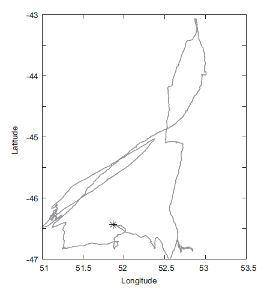
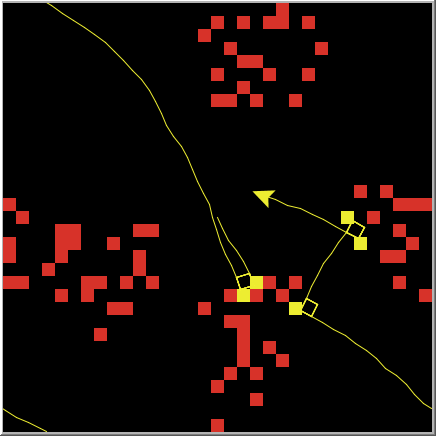

1 ¿Qué es un modelo?
1.1 Introducción
Un modelo es una representación intencional de algún sistema real Starfield et al. 1990. Construimos y usamos modelos para resolver problemas o responder preguntas sobre un sistema o una clase de sistemas. En ciencia, generalmente se quiere entender cómo funcionan las cosas, explicar patrones que surgen de lo que se observa o predecir el comportamiento de un sistema en respuesta a algún cambio. Los sistemas reales a menudo son demasiado complejos o evolucionan muy lentamente para ser analizados mediante experimentos, por ejemplo, sería extremadamente difícil y lento entender cómo crecen las ciudades y como cambia el uso de la tierra en un pais solo con experimentos, por lo tanto, intentamos formular una representación simplificada del sistema utilizando normalmente:
- ecuaciones matemáticas. (diferenciales por lo general)
- un programa de computadora que luego podemos manipular y experimentar (simulador).
Hay muchas formas de representar un sistema real (una ciudad o un paisaje por ejemplo) en una forma simplificada, pero:
- ¿Cómo podemos saber qué aspectos del sistema real incluir en el modelo y que ignorar?
Para responder a esta pregunta, el propósito o intención del modelo es decisivo. La pregunta que queremos responder con el modelo es el filtro que nos permite excluir todos aquellos aspectos del sistema real considerados irrelevantes o no muy importantes para este propósito, estos son ignorados en el modelo o representados solo de una manera muy simplificada.
1.2 Un primer ejemplo
Consideremos un ejemplo simple, pero no trivial: ¿Alguna vez buscó hongos en un bosque? ¿Se preguntó cuál sería la mejor estrategia de búsqueda?Los hongos son muy difíciles de ver, si se va caminando por un bosque y a menudo se pisan antes de verlos, si es un experto en hongos sabría cómo reconocer un buen hábitat de hongos, pero supongamos que usted es un neófito.
Se puede pensar en varias estrategias intuitivas de búsqueda , como buscar en un área determinada haciendo barridos amplios pero, al encontrar un hongo, pasar a una escala más reducida de barrido porque se sabe que los hongos ocurren en racimos. Pero, ¿qué significa “grande”, “pequeño”, “barridos”? y ¿cuánto tiempo debería transcurrir para terminar los barridos más pequeñosy volver a los más amplios? Muchas especies animales enfrentan problemas similares, por lo que es probable que la evolución los haya equipado con buenas estrategias de búsqueda adaptativa, en general la búsqueda de recursos alimenticios por parte de una especie es un problema vital y es un tema grande de estudio en ecología ForAging. (Es probable que lo mismo sea cierto para las organizaciones humanas en búsqueda de ganancias o de paz con sus vecinos.) El albatros, por ejemplo, se comporta de cierta manera como un buscador de hongos cuando busca alimento para sus crías : alterna largas distancias más o menos lineales con movimientos a pequeña escala:

Una característica común del buscador de hongos y el albatros es que su radio de detección es limitado, solo pueden detectar lo que buscan cuando están cerca , además los elementos buscados no se distribuyen totalmente al azar, sino en grupos, por lo que el comportamiento de búsqueda debe ser adaptativo: debe cambiar una vez que se encuentra lo buscado.
- ¿Por qué querríamos desarrollar un modelo de este problema?
Porque incluso para este simple problema es difícil desarrollar modelos mentales cuantitativos, intuitivamente encontramos una estrategia de búsqueda que funciona bastante bien, pero luego vemos a otros que usan estrategias diferentes y encuentran más hongos en este caso : ¿Son más afortunados o son mejores sus estrategias? Necesitamos un propósito claramente formulado antes de poder formular un modelo. Imagine que alguien simplemente dice: “Por favor, modele la captura de hongos en el bosque”, esta es una pregunta muy vaga, ¿En qué hay que concentrarse?
- En diferentes especies de hongos
- En diferentes tipos de bosques
- En identificación de buenos y malos hábitats.
- En efectos de un incendio en poblaciones de hongos, etc.
Sin embargo, si el propósito es:
“¿Qué estrategia de búsqueda maximiza el número de hongos encontrados en un tiempo específico?”
sabemos que, por ejemplo:
- Podemos ignorar los árboles y la vegetación; solo tenemos que tener en cuenta que los hongos están distribuido en grupos. Además, podemos ignorar cualquier otra heterogeneidad en el bosque, como topografía o tipo de suelo, que pueden afectar un poco la búsqueda, pero no lo suficiente como para afectar la respuesta general a nuestra pregunta.
- Será suficiente con representar al cazador de hongos de una manera muy simplificada: como un punto ( o una flecha) en movimiento que tiene un cierto radio de detección y registra cuántos hongos ha encontrado al igual que tiene en cuenta cuánto tiempo ha pasado desde que encontró el último hongo ( para cambiar de tipo de búsqueda)
Con este proposito de maximizar los hongos encontrados en un periodo de tiempo, podemos formular un modelo muy sencillo que incluya dos tipos de agentes:
- clusters de hongos distribuidos en el bosque. (agentes estáticos)
- Un “agente” buscador que los busca. (agentes dinámicos)
Si el agente dinámico (o individuo) encuentra un hongo, su búsqueda cambia a una manera de busqueda más local, pero si el tiempo transcurrido desde que encontró el último elemento supera un umbral (este podría ser un parámetro del modelo), el agente cambia su estrategia a movimientos más amplios para aumentar sus posibilidades de detectar otro cluster de hongos.
(Nota: Si suponemos que la capacidad de detección no cambia con la velocidad de movimiento, incluso podemos ignorar la velocidad con la que se mueve el agente)

La anterior figura muestra un ejemplo de ejecución de un posble modelo construido en NetLogo, una pregunta muy importante, y a veces angustiante, es:
- ¿cómo podemos saber que factores o aspectos son importantes con respecto a la pregunta abordada con un modelo?
La respuesta clara y contundente es: ¡no podemos!, esta es exactamente la razón por la cual tenemos que formular, implementar y luego analizar un modelo, porque entonces y solo entonces podremos explorar rigurosamente las consecuencias de nuestros supuestos simplificadores y observar que factores son o no son relevantes.
Nuestra primera formulación del modelo debe basarse en nuestra comprensión preliminar de cómo el sistema funciona, cuáles son los elementos y procesos importantes, etc. Estas ideas preliminares pueden basarse en:
- el conocimiento empírico del comportamiento del sistema.
- en modelos anteriores que abordan preguntas similares
- en teorías
- o simplemente en nuestra imaginación (como en nuestro caso).
Sin embargo, si no tenemos idea de cómo funciona un sistema, no podremos formular un modelo! Por ejemplo, aunque los científicos son felices al modelar casi todo, hasta ahora parece no haber un modelo explícito de la conciencia humana, simplemente porque hasta el momento nadie tiene mucha idea de qué es realmente la conciencia y cómo se origina. Debido a que los supuestos en la primera versión de un modelo son experimentales, tenemos que probar si son apropiados y útiles. Para esto, necesitamos criterios para determinar si el modelo puede ser considerado una buena representación del sistema real. Estos criterios se basan en patrones o regularidades que nos permiten identificar y caracterizar el sistema real en primer lugar. Los modelos de mercado, por ejemplo, deberían producir los tipos de volatilidad en los precios y tendencias que vemos en mercados reales. A menudo encontramos que la primera versión de un modelo es demasiado simple, carece de procesos y estructuras importantes, o simplemente es inconsistente. Entonces es el momento de revisar nuestro propósito y nuestras suposiciones iniciales
1.3 El ciclo de modelaje
Cuando pensamos en construir un modelo como el de buscador de hongos (o el del albatros), realizamos casi siempre una serie de tareas. El modelado científico significa realizar estas tareas de forma sistemática y utilizar los modelos basados en agentes, MOBAS, construidos (llamados con frecuencia simuladores) para validar las consecuencias de los supuestos simplificadores que componen nuestros modelos. Ser científico siempre significa repetir las tareas de modelado varias veces, porque nuestros primeros modelos siempre se pueden mejorar de alguna manera: son demasiado simples o demasiado complejos, o nos hicieron darnos cuenta de que estábamos haciendo las preguntas equivocadas. Por lo tanto, es útil ver el modelado como una iteración a través del llamado “ciclo de modelado”:
Iterar no significa que siempre recorremos por el ciclo completo; más bien, a menudo pasamos por bucles más pequeños, el ciclo de modelado consiste en las siguientes tareas:
- Formular la pregunta.
Necesitamos comenzar con una pregunta de investigación muy clara porque entonces la pregunta sirve como la brújula principal y el filtro para diseñar un modelo. A menudo, formulando una pregunta clara y productiva es en sí misma una tarea importante porque una pregunta clara requiere un enfoque claro. Para sistemas complejos, enfocarse puede ser difícil. Muy a menudo,incluso nuestras preguntas son solo experimentales y luego podríamos necesitar reformular la pregunta, tal vez porque resultó no ser lo suficientemente clara, o demasiado simple o demasiado compleja.La pregunta en nuestro modelo de búsqueda de hongos es:
- ¿Qué estrategia de búsqueda maximiza la tasa de encontrar hongos si estos se distribuyen en grupos?
- Ensamblar hipótesis.
El modelado basado en agentes DeAngelis es intuitivo y análogo a la realidad, en el sentido de que no estamos tratando de agregar agentes y sus funcionalidades en algunas variables abstractas y agregadas como población, biomasa, riqueza general, etc… En cambio, representamos los agentes individuales directamente y definimos a través de sencillas reglas su comportamiento,luego los colocamos en un entorno (mundo) y “corremos” el modelo para observarlo y ver qué podemos aprender de él. Tenemos que obligarnos a simplificar tanto como podamos, o incluso más. El ciclo de modelado debe comenzar con el modelo más simple posible, porque queremos desarrollar una comprensión gradual, un error muy común (y a veces difícil de evitar) es “arrojar” demasiado a la primera versión del modelo, generalmente argumentando que todos estos factores son claves y no pueden ser ignorados. Entonces, la respuesta del modelador experto debía ser:
- “Sí, puede que tengas razón, pero centrémonos en el número mínimo de factores primero, coloca todos los otros elementos que crees que podrías necesitar en el modelo en tu”lista de deseos" y podemos verificar su importancia más adelante".
La razón de este consejo es esta: nuestra comprensión inicial de un sistema no es suficiente para decidir si las cosas son más o menos importantes para un modelo. Es el propósito del modelo el que nos enseña lo que es importante. Es aconsejable tener un modelo implementado lo antes posible, incluso si es ridículamente simple, cuanto más fácil sea implementarlo y analizarlo mejor. La fase productiva real en un proyecto MOBA comienza cuando ponemos en marcha el modelo y lo comenzamos a observar y analizar. Para el modelo de Búsqueda de Hongos asumimos que el proceso esencial es cambiar entre búsqueda relativamente recta a gran escala y búsqueda a pequeña escala, dependiendo de cuánto tiempo haya pasado desde la última vez que el buscador encontró un hongo
- Elegir escalas, entidades, variables de estado, procesos y parámetros.
Una vez que elegimos algunos supuestos simplificadores e hipótesis para representar nuestro sistema, es hora de sentarse y pensar en nuestro modelo en detalle. Así producimos una formulación escrita del modelo. Producir y actualizar esta formulación es esencial para todo el proceso de modelado, incluida la entrega a nuestros “clientes” (nuestro comité de tesis, revisores de revistas, investigación patrocinadores, etc.).Este paso, para el modelo de Buscador de Hongos, incluye especificar:
- Cómo se representa el espacio donde se mueven los buscadores (como cuadrículas cuadradas con un tamaño igual).
- Qué tipos de objetos hay en el modelo (un buscador y los elementos que busca).
- Las variables de estado o las características del buscador (el tiempo que ha buscado y la cantidad de hongos que ha encontrado, y el tiempo desde la última vez que encontró un hongo) y..
- Cómo se busca (comportamiento del modelo).
(Nota: Existe un protócolo de formulación de un MOBA muy usado llamado el Protocolo ODD (Odd Protocol)
- Implementar el modelo.
Esta es la parte más técnica del ciclo de modelado, donde convertimos nuestra descripción verbal del modelo en un objeto “animado”. ¿Por qué “animado”? Porque, en cierto modo, el modelo tiene su propia dinámica independiente (o “vida”), impulsada por la lógica interna del modelo y entonces podemos explorar, de forma rigurosa, las consecuencias de nuestros supuestos y ver si nuestro modelo inicial es útil. Esta tarea a menudo es la más desalentadora, porque generalmente no se tiene entrenamiento en cómo construir modelos en computador ( en este caso de modelos basados en agentes). la plataforma que usaremos(NetLogo),nos permitirá implementar MOBAs de un manera natural, sencilla y eficiente a la vez.
- Analizar, probar y revisar el modelo.
Los modeladores novatos podrían pensar que diseñar e implementar un modelo en la computadora es lo que requiere más trabajo pero no, la tarea una vez implementado el modelo es analizarlo y aprender de él es la que requiere más tiempo y es las más exigente. Con NetLogo, aprenderá a implementar rápidamente sus propios MOBAs, para hacer ciencia para analizarlos usaremos R y Rstudio. Gran parte de este libro estará dedicado a esta tarea:
- ¿Cómo podemos aprender de nuestros modelos?
Para responder a la pregunta en el caso de la búsqueda de hongos, podríamos analizar el modelo consrtuido, probándolo con una variedad de algoritmos de búsqueda y valores de parámetros para ver cuál produce la tasa más alta de encontrar hongos